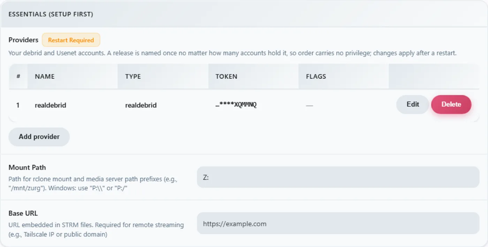

Windows，二进制文件，从零开始
一行命令方式
从 PowerShell 运行可选的赞助者初始化脚本。它会通过 UAC 安装 WinFsp，下载 zurg，并运行 provider 选择器和诊断工具：
irm https://raw.githubusercontent.com/debridmediamanager/zurg-site/main/public/install.ps1 | iex它使用 GitHub 浏览器登录，并安装到 $HOME\zurg。已有的二进制文件和配置会保留。如果你想走手动方式，请继续
往下看。
不需要 Docker，也不需要 WSL：只要一个文件夹里放 zurg .exe，一个只需写一次的 config.yml，然后在资源管理器中使用 Z: 盘符即可。
本页分两轮完整介绍整个流程：先是 RealDebrid 搭配 qBittorrent 端点，然后完全重置，再用 Usenet 搭配 SABnzbd 端点。之所以这样安排，是因为这两种安装是大家最常做的，而且它们分别用到了 zurg 的不同部分。
下面的内容都是在一次实际安装中记录的：Windows 11 Pro 23H2（build 22631）、PowerShell 5.1、WinFsp 2.0.23075、zurg 2026.08.30.0459-nightly-73-g5b4c9790，以及一个 Real-Debrid 账户和一个 Usenet 新闻服务账户。用户名已更改。API 密钥和库中条目数量仅作示例，其中的任何凭据同样只是示例。
你需要准备
- zurg.exe — 从赞助者发布页下载。在 gatekeeper 上成为赞助者，以便为你的 GitHub 账号开通访问权限。本页假设你已经下载好了它。
-
WinFsp — zurg 通过 rclone 挂载资源库，而在 Windows 上 rclone 需要 WinFsp 才能使用盘符。可以静默安装，也可以从安装程序手动安装：
$url = "https://github.com/winfsp/winfsp/releases/download/v2.1/winfsp-2.1.25156.msi" Invoke-WebRequest -Uri $url -OutFile "$env:TEMP\winfsp.msi" -UseBasicParsing Start-Process msiexec.exe -ArgumentList "/i", "$env:TEMP\winfsp.msi", "/qn", "/norestart" -Wait - 一个账号 — 第一步需要一个 Real-Debrid API token，第二步需要一个新闻服务器。
就这些了。内置安装程序会下载 rclone，如果你的 PATH 中还没有 ffprobe，也会一并下载。
推荐：让 zurg 自动完成设置
新建一个文件夹，把 zurg.exe 放进去，然后在 PowerShell 里运行安装程序：
New-Item -ItemType Directory -Force "$HOME\zurg" | Out-Null
Set-Location "$HOME\zurg"
# Copy the downloaded zurg.exe here, then:
.\zurg.exe setup
.\zurg.exe doctorsetup 会问你要配置哪些服务商。你可以从 Real-Debrid、TorBox、AllDebrid、Usenet、Premiumize、Debrid-Link 和 Offcloud 里选一个或多个，并按优先级排序。它只会要求你填所选服务商的凭据。之后它会：
- 创建并验证
config.yml。 - 把它的 ACL 限制为你的用户、SYSTEM 和 Administrators。
- 下载
bin\rclone.exe；如果你的 PATH 里已经有 ffprobe，就不下载bin\ffprobe.exe，此时config.yml会写着ffprobe_binary: ffprobe。 - 在
Z:启用 rclone 挂载。 - 把
\Zurg\zurg注册为交互式登录任务，并在有桌面用户登录时启动它。
如果需要，可以换一个没被占用的盘符：
.\zurg.exe setup --mount-path "Y:"安装程序可以重复运行，不会有问题。它会更新生成的任务，但不会替换已有的 config.yml。
这里特意使用交互式任务。WinFsp 驱动器挂载属于创建它的 Windows 登录会话。普通的 Windows 服务运行在会话 0 中，它挂载的驱动器在桌面上对 Plex 和资源管理器都是不可见的。这个安装程序的行为已于 2026 年 9 月 4 日在 Windows 11 上验证过。
下面的演练会先展示安装程序背后的文件和配置，然后搭建 Real-Debrid 和 Usenet 下载客户端的设置。如果你想自己组装这些部分，手动首次运行和计划任务的步骤会很有用。
1. 手动首次运行：zurg 会建立自己的目录
创建一个文件夹，把可执行文件放进去，然后在没有配置文件的情况下运行一次：
PS C:\Users\you> mkdir C:\Users\you\zurg
PS C:\Users\you\zurg> .\zurg.exezurg 会生成一个与提供商无关的默认配置，告诉你接下来该做什么，然后退出：
INFO setup Config file not found, creating default from config.simple.yml
INFO zurg Default config created at config.yml
INFO zurg Run zurg setup to choose provider(s), or add a providers block to config.yml, then rerun zurg.运行 .\zurg.exe setup 来选择提供商并下载辅助程序。setup 完成后，文件夹结构如下：
C:\Users\you\zurg\
├── bin\ rclone.exe, and ffprobe.exe unless ffprobe was on your PATH
├── data\ library cache, keys, the __magic__ table
├── dump\
├── logs\ zurg.log, rclone.log
├── nzbs\ the Usenet watch directory (second pass)
├── strm\
├── config.yml
└── zurg.exe生成的 config.yml 一开始提供商列表是空的，还有两个目录过滤器。setup 会根据你的选择填充这个列表。下面的手动示例会用每个教程对应的配置替换它。
2. RealDebrid 步骤
配置文件
用下面的内容覆盖 config.yml：包含 Real-Debrid token、开启 qBittorrent 端点，并把挂载盘符设为 Z:：
zurg: v1
providers:
- type: realdebrid
token: YOUR_RD_API_TOKEN
directories:
shows:
group: media
group_order: 10
filters:
- has_episodes: true
movies:
group: media
group_order: 20
only_show_the_biggest_file: true
ffprobe_binary: bin\ffprobe.exe # or ffprobe, if that is what setup wrote
rclone_binary: bin\rclone.exe
rclone_enabled: true
mount_path: "Z:"
rclone_extra_args:
- "--links"
magic:
enabled: true
qbittorrent:
enabled: true
api_key: "" # empty = zurg generates one and keeps it
categories: [tv-sonarr, radarr]以下是三个 Windows 相关的注意事项：
--links是可选的，但建议保留。 zurg 把资料库作为 rclone union 提供，它由本地和远程两部分组成。驱动器出现时，WinFsp 会立即询问挂载根目录是不是符号链接。如果不加这个参数，rclone 会对这次探测回复ERROR : symlinks not supported without the --links flag: /，但仍然会正常挂载。我在 2026-08-31 做过测试，使用 zurg2026.08.31.0443-nightly，分别配合 rclone 1.74.2 和 1.75.0。无论有没有这个参数，驱动器、union 的两部分以及__magic__写入的表现都完全一样。加上参数后，同样的探测会记录NOTICE: union root '': Symlinks support enabled。而且如果你以后在data\local下放真正的符号链接，rclone 也能正确处理。保留它，日志会更干净。mount_path: "Z:"这里是盘符，不是 POSIX 路径。任何空闲的盘符都可以用。- 如果你想让 Sonarr 或 Radarr 从这台机器导入文件，请保留
magic.enabled: true。 导入实际上是在__magic__里做一次重命名。没有它的话，每次导入都会变成完整下载。下面的 Usenet 部分也是同样的道理。
启动并查看日志
以普通方式启动 zurg，在该文件夹中打开一个 PowerShell 窗口：
PS C:\Users\you\zurg> .\zurg.exe --config config.yml它首先会执行 Real-Debrid 的网络测试：对每个下载地区的测试链接进行解除限制，并测量延迟，大约需要二十秒。随后会出现比较重要的日志行：
INFO network_test Network test completed!
INFO zurg Provider realdebrid ready (type=realdebrid)
INFO router __magic__ serves sidecar files from data\local\__magic__
INFO router.qbittorrent qBittorrent API on /api/v2 and /qbittorrent/api/v2, save path Z:/__magic__/__all__, categories tv-sonarr, radarr
INFO router.qbittorrent qBittorrent: generated an API key in data/qbittorrent-apikey — paste it into Sonarr or Radarr's API Key field, or pin one as qbittorrent.api_key in config.yml
INFO zurg Starting server on http://[::]:9999
INFO rclone rclone started with mount Z:, union local C:\Users\you\zurg\data\local日志中不会显示密钥本身。密钥保存在 data\qbittorrent-apikey 中。接着开始遍历资料库。首次启动会读取账户上的所有种子，账户较大时需要一段时间。遍历时会与账户上的其他操作共用服务商的 API 配额。遍历期间，__magic__ 会回复 Library is still loading，这是正常现象，不是故障。
你可能会看到一条警告，它已知且不影响运行：

仪表板
http://localhost:9999/ — 库的大小随着遍历进行不断增长，还有流量和内存。Quick Links 就是整个界面：Torrent Manager、Config、Directories、Magic、Logs。

Config 是首次运行后所有设置的所在。providers 区块显示唯一的账户：

download-client 区块——和你在 config.yml 里设置的是同一批开关，可以在这里编辑，每次修改都会标上 Restart Required，这句话是字面意思：两个端点都只在启动时注册一次路由。

还有挂载区块，显示盘符和 rclone 的监管状态：

Z: 盘
When zurg runs, Z: is a petabyte-scale filesystem in Explorer:

But only if zurg runs where Explorer can see it — and that is the one genuinely Windows-shaped rule in this setup. A drive-letter mount belongs to the logon session that created it. Start zurg from an SSH connection or from a service and the mount exists, works, and is invisible to your desktop. This is not a bug in WinFsp or rclone; it is how Windows scopes drive letters.
验证 qBittorrent 端点
在任意 PowerShell 中，所有平台的探测命令都一样：
PS> $KEY = Get-Content data\qbittorrent-apikey
PS> Invoke-WebRequest "http://localhost:9999/api/v2/app/webapiVersion"
# the healthy unauthenticated answer is a 403 — "the API is here, log in"
PS> Invoke-RestMethod "http://localhost:9999/api/v2/app/version" -Headers @{ Authorization = "Bearer $KEY" }
v5.0.4
PS> (Invoke-RestMethod "http://localhost:9999/api/v2/app/preferences" -Headers @{ Authorization = "Bearer $KEY" }).save_path
Z:/__magic__/__all__添加种子也一样。.torrent 文件用 curl.exe -F 上传（Windows PowerShell 里的普通 curl 其实是 Invoke-WebRequest，没有 -F 参数），或者让任何客户端替你完成：
INFO router.qbittorrent qBittorrent: added op1176 (dc98af37…) to realdebrid as W7FRRMVJWUOMS这次安装抓取的发布版本在账户里没有缓存，所以 *arr 风格的队列显示真正在下载。进度在大约六分钟内从 2% 涨到 10%、50%、75%，再到 99%，速率由 Real-Debrid 报告。然后出现了：
INFO router.qbittorrent qBittorrent: op1176 (dc98af37…) finished on realdebrid之后种子显示已完成，并有一个可供导入的文件夹：
"content_path": "Z:/__magic__/__all__/[NanakoRaws] One Piece S01E1176 (THK TV 1080p HEVC AAC)"通过 Z: 读取文件，几毫秒就读到了一兆字节。rclone 的 VFS 预读在供应商前面做缓冲，所以热读取接近本地磁盘速度，文章数据则在后台继续流入。
有一种拒绝情况值得了解。这次安装最先尝试的发布版本名称里带有 …WEBRip…，而 Real-Debrid 会直接屏蔽某些发布名称。zurg 知道这些规律，会在占用添加名额之前就拒绝：
WARN router.qbittorrent qBittorrent: realdebrid will not take op1176: it refuses that name outright, so the next account is tried换一个命名不同的发布版本，就能正常添加。种子使用教程深入介绍了整个接口，包括超时、仅缓存模式和失败语义。客户端设置与教程中的一致，只是有两点 Windows 注意事项：如果 *arr 和 zurg 运行在同一台机器上，Host 填 localhost；并且 *arr 必须与 zurg 运行在同一个登录会话中，才能看到 Z:。详见
3. 重置
把安装从 Real-Debrid 切换到 Usenet，需要先清空一次。先停止 zurg，再删除第一次安装时生成的所有内容，但保留可执行文件和 bin\，这样辅助程序就不用重新下载。
PS> cd C:\Users\you\zurg
PS> .\zurg.exe service uninstall # removes the task setup made; or Unregister-ScheduledTask zurg for the manual one, or close the console window
PS> taskkill /IM zurg.exe /F ; taskkill /IM rclone.exe /F
PS> Get-ChildItem -Exclude zurg.exe, bin | Remove-Item -Recurse -Force
PS> Get-ChildItem
bin
zurg.exe那条 Get-ChildItem -Exclude … | Remove-Item 就是整个重置操作。它会删除 config.yml、data\、logs\、nzbs\ 等所有内容。留下来的，正是全新安装所需要的东西。
4. Usenet 步骤
配置文件
zurg: v1
providers:
- type: nzb
nntp:
host: news.example.usenet.com
port: 563
tls: true
username: YOUR_NEWS_USERNAME
password: YOUR_NEWS_PASSWORD
connections: 8
directories:
shows:
group: media
group_order: 10
filters:
- has_episodes: true
movies:
group: media
group_order: 20
only_show_the_biggest_file: true
ffprobe_binary: bin\ffprobe.exe # or ffprobe, if that is what setup wrote
rclone_binary: bin\rclone.exe
rclone_enabled: true
mount_path: "Z:"
rclone_extra_args:
- "--links"
magic:
enabled: true
sabnzbd:
enabled: true
api_key: "" # empty = zurg generates one and keeps it
categories: [tv, movies]和之前的结构相同，只是服务商不同：这里用的是新闻账号而不是 debrid token，并且使用 SABnzbd 端点而不是 qBittorrent 端点：
对于串流来说，八个连接已经足够；账号套餐本身会注明连接数上限。
（之前的一版译文被拒绝了：长度比例为 0.18。请完全保持原有结构。）
启动
PS C:\Users\you\zurg> .\zurg.exe --config config.yml与第一次运行相比，差别一目了然：没有扫描过程。NZB 库一开始是空的，在你放入 NZB 之前，没有任何东西需要从别处获取，所以启动时只需要做网络测试、输出端点信息，以及连接新闻服务器：
INFO nzb NZB articles are kept in memory for the life of the process (nzb_segments: resident)
INFO zurg Provider nzb ready (type=nzb)
INFO router __magic__ serves sidecar files from data\local\__magic__
INFO router.sabnzbd SABnzbd API on /api and /sabnzbd/api, completed directory Z:/__magic__/__all__, categories tv, movies
INFO router.sabnzbd SABnzbd: generated an API key in data/sabnzbd-apikey — paste it into Sonarr or Radarr, or pin one as sabnzbd.api_key in config.yml
INFO zurg Starting server on http://[::]:9999
INFO rclone rclone started with mount Z:, union local C:\Users\you\zurg\data\local
INFO zurg Usenet account nzb connected: nntps://news.example.com:563 (8 connections)zurg 一启动就会连接新闻服务器，并保持连接处于活跃状态，包括 TLS。SABnzbd 密钥会保存到 data\sabnzbd-apikey。

现在仪表盘显示的是一个空库，这是正常的：

providers 配置块包含新闻账户，download-client 配置块现在显示了 SABnzbd 的部分：


放入一个 NZB 文件
nzbs\ 目录是唯一的入口。把一个 NZB 放进去，不管是从哪个索引站下载的，zurg 都会自动处理：
PS> Copy-Item .\lanterns.nzb C:\Users\you\zurg\nzbs\INFO nzb Loaded NZB lanterns.nzb: 8 files看到这一行，就说明 NZB 解析成功了。发布内容会以文件夹的形式出现在挂载点的 __magic__\__all__ 下面。Usenet 发布的文件名由发布者随意起，所以里面的文件可能长这样：J8AZfuVQCD4yPpRIF566Bv0xKoEpYa3M.mkv。外层文件夹用的是 NZB 的名字，里面的文件用的是发布者起的名字：

到这一步还没有下载任何东西，直到有程序去读取文件才会开始下载。第一次读取某一集（162 MB）时，zurg 只会抓取覆盖所请求范围的那些文章，做 yEnc 解码后返回结果。之后的读取会很快，因为 VFS 已经提前读取了周围的数据。一个 60 GB 的 remux 文件，在 Usenet 或 debrid 上都不会占用你的本地磁盘空间。
SABnzbd 接口和以前一样，可以用同样的方式探测：
PS> $KEY = Get-Content data\sabnzbd-apikey
PS> Invoke-RestMethod "http://localhost:9999/api?mode=version&apikey=$KEY&output=json"
{"version":"4.5.1"}
PS> (Invoke-RestMethod "http://localhost:9999/api?mode=get_config&apikey=$KEY&output=json").config.misc.complete_dir
Z:/__magic__/__all__密钥错误时，zurg 会在响应体里返回拒绝信息，HTTP 状态码仍然是 200。这是 SABnzbd 本身的行为，zurg 也照着做：
PS> Invoke-RestMethod "http://localhost:9999/api?mode=queue&apikey=wrong&output=json"
{"status":false,"error":"API Key Incorrect"}客户端这边（Sonarr、Radarr、分类、Z:\__magic__ 下的根文件夹等）可以参考Usenet 图文教程，里面有分步说明。其中的每个路径都只需把 /mnt/zurg/__magic__ 替换成 Z:\__magic__ 即可。Usenet 指南则介绍了账号分组、保留时长和修复相关内容。
保持运行：会话规则
盘符属于挂载它的那个登录会话。在捕获此页面的机器上,实际情况如下:
zurg setup 会自动创建可用的交互式任务。在 zurg 目录中用下面的命令管理它:
.\zurg.exe service status
.\zurg.exe service restart
.\zurg.exe service stop
.\zurg.exe service start
.\zurg.exe service uninstallStop 和 restart 会先让 zurg 正常关闭,这样它的 rclone 子进程才会释放盘符。uninstall 会删除任务,但保留二进制文件、配置、数据、日志和缓存。
手动等效的做法是创建一个计划任务,只在你登录时以你的身份运行:
$wdir = "C:\Users\you\zurg"
Set-Content "$wdir\start-zurg.cmd" "@echo off`ncd /d $wdir`nzurg.exe --config config.yml"
$action = New-ScheduledTaskAction -Execute "cmd.exe" -Argument "/c $wdir\start-zurg.cmd"
$trigger = New-ScheduledTaskTrigger -Once -At (Get-Date).AddSeconds(5)
$principal = New-ScheduledTaskPrincipal -UserId $env:USERNAME -LogonType Interactive
$settings = New-ScheduledTaskSettingsSet -AllowStartIfOnBatteries -ExecutionTimeLimit ([TimeSpan]::Zero)
Register-ScheduledTask -TaskName "zurg" -Action $action -Trigger $trigger `
-Principal $principal -Settings $settings -Force
Start-ScheduledTask -TaskName "zurg"用登录触发器(New-ScheduledTaskTrigger -AtLogOn)代替 -Once,重启后它会自动回来。ExecutionTimeLimit ([TimeSpan]::Zero) 很关键,没有它,Task Scheduler 会在 72 小时后把任务杀掉。
在这台机器上实测的两个坑:
- 带
-NoExit的控制台会卡住任务槽。 如果启动器在 zurg 停止后还留着窗口,计划程序会认为任务仍在运行,之后每次Start-ScheduledTask都会被拒绝,报错0x800710E0。再次启动前先执行Stop-ScheduledTask zurg,或者像上面那样直接运行二进制文件,这样 zurg 结束时任务也会结束。 - 在某个窗口里执行
Get-PSDrive看不到盘符,并不代表挂载失效。 盘符只对同一登录会话中的进程可见,也就是你桌面上的应用,而不是你碰巧打开的每一个 PowerShell。如果某个窗口里没有Z:,先确认该窗口的会话来源,再判断挂载是否已经失败。
如果你根本不需要 Explorer,比如无头机器,或者客户端只使用 HTTP,这些都不重要:想怎么运行 zurg 就怎么运行,然后把客户端指向 http://localhost:9999/dav/ 或其他端点即可。会话规则只影响盘符。
从其他机器访问 zurg
这台电脑上的程序通过 localhost 访问 zurg。Windows 防火墙会挡住网络上其他设备的访问，除非你放行。如果 Sonarr、Radarr、媒体服务器或其他电脑上的浏览器要访问 zurg，请以管理员身份在 PowerShell 中运行下面这条命令一次（如果你在 config.yml 里改过 port:，就用你改的那个端口号）：
New-NetFirewallRule -DisplayName zurg -Protocol TCP -LocalPort 9999然后另一台设备就用这台电脑的 IPv4 地址代替 localhost，这个地址可以通过 ipconfig 查看。
如果还是连不上，就找找有没有阻止 zurg 的规则。在 Windows 弹出允许 zurg.exe 的提示时点了 Cancel，就会生成一条阻止规则，而阻止规则的优先级高于上面那条放行规则。下面这条命令会以管理员身份删除 $HOME\zurg 里 zurg.exe 的这些规则（如果你的 zurg 放在别的位置，请修改路径）：
Get-NetFirewallApplicationFilter -Program "$HOME\zurg\zurg.exe" | Get-NetFirewallRule | Where-Object Action -eq Block | Remove-NetFirewallRule保持缓存小巧
挂载会把它播放过的每个文件完整保存到 zurg 文件夹下的 data\rclone-cache（如果你用的是一行命令安装，则是 $HOME\zurg\data\rclone-cache）。播放结束后这些文件会保留下来，默认最多增长到 256G。
不要指望 72h 的过期时间来清理它。Plex 的计划任务每晚都会读取缓存文件，这会重置它们的时间，所以它们永远不会过期。真正起作用的限制是大小上限。
要想少占磁盘，就在 config.yml 里调低上限。rclone_extra_args 是一个列表，所以把新的几行加在你已有的 --links 下面，不要再写第二个 rclone_extra_args:：
rclone_extra_args:
- "--links"
- "--vfs-cache-max-size"
- "50G"
- "--vfs-cache-min-free-space"
- "20G"--vfs-cache-min-free-space 会让 rclone 在磁盘快要占满时停止缓存。然后重启 zurg：
.\zurg.exe service restart重启后 rclone 会把缓存裁剪到新的上限。如果想马上清空，先停止 zurg：
.\zurg.exe service stop
Remove-Item -Recurse -Force .\data\rclone-cache\vfs\*, .\data\rclone-cache\vfsMeta\* -ErrorAction SilentlyContinue
.\zurg.exe service start要查看它实际占用多少空间，打开 rclone-cache 文件夹的 Properties，看 Size on disk。部分下载的文件是稀疏文件，所以 Size 显示的数字会比磁盘实际占用大得多。
更多细节见 挂载占用的磁盘空间。
更新 zurg
A sponsor build replaces itself:
cd $HOME\zurg
.\zurg.exe update
.\zurg.exe service restartupdate takes the newest nightly, checks the download reports the version it expected before replacing anything, and moves the running zurg.exe aside so Windows will let the new one land. When the installed build is already the newest it says so and changes nothing. The restart runs the new build.
On a build too old to carry the command, the installer does the same job:
$env:ZURG_INSTALL_MODE = "update"; irm https://raw.githubusercontent.com/debridmediamanager/zurg-site/main/public/install.ps1 | iex故障排除
还有问题？请到 Discord 的 zurg-support 论坛提问。获取帮助 中说明了提问时应包含哪些信息。
通过 SSH 使用 PowerShell（适合远程管理的用户）
Windows PowerShell 处理一些 POSIX 写法时会出错，SSH 也会吃掉引号。&& 不是分隔符，2>/dev/null 不是重定向，行内 -Command 里的 $_.Property 也会被弄坏。稍微复杂一点的东西，就把它写进 .ps1 文件，复制过去，然后运行 powershell -ExecutionPolicy Bypass -File C:\path\script.ps1。本页面上的整套环境就是这样跑起来的。
另请参阅
- Linux、Docker 和 macOS —— 在其他平台上的相同安装方式
- Sonarr & Radarr for torrents —— 从头到尾讲解 qBittorrent 端点，包括客户端设置
- Sonarr & Radarr —— SABnzbd 端点，同上
- Usenet —— 新闻服务器账户、保留期、修复，以及
nzb后端的详细说明 __magic__—— 两个端点都会导入的目录